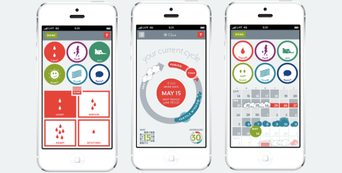

Hackathon
To me, a hackathon is when a group of people gather for a day or two, working for a somewhat common goal, develop, have fun, meet new people, and to home. Unfortunately for whatever reason, most hackathons have become a competition, with a set prize, organized by some company. The good part is that some attendees might get some money out of the hackathon, but the down side is that it usually becomes a competition and people stop collaborating. I was very happy to see that was not very the case in this hackathon, and we had mostly a really nice atmosphere for the whole weekend. It was a pleasurable experience working and chatting with Clue and WATTx people as well as the attendees.
Clue
Clue is for people who experience menstruation cycles, or periods, to record their cycle, and related symptoms. These symptoms include bleeding, pain, skin condition, premenstrual syndrome (PMS), among others. The app in return, gives you predictions regarding your period, ovulation, and PMS. The app looks like this:

Using the app you can easily see if there are any irregularities in your cycle, and/or see when you should be expecting phases such as ovulation, period, or PMS, and read about menstruation cycle in general if you’re interested. Some symptoms can be recorded and predicted directly, such as bleeding, others are less directly observed such as ovulation. The app uses observations from other related symptoms to predict these phases.
The data that the app collects is invaluable to a better understanding of the menstruation cycle, related diseases, and even (birth control) pills. I hope the data helps our society to understand cycles better, and potentially improve half of the population’s lives.
Statice by WATTx
Fortunately, people at Clue value users’ privacy a great deal. But that means they can’t have a hackathon and give people real users’ data to work on. Here’s where the Statice platform designed by the nice folks at WATTx comes in. Their platform is still taking shape and this hackathon was also a test for them to see how the platform works. But in short, they take the real data, produce some data using the real one, which resembles the real data, but users’ profiles from the real data are not revealed by looking at the synthesized data. Their synthesized data was what we worked on, and using that data we developed our method. Then to test the method against the real data, we would submit our method in the form of a docker container, and they would use that container to train our models on the real data, and then test it against the test set, again from the real data. And then, we would see the score of the method, or failed in case there was something wrong with the code or during the run.
Goal
The goal of the hackathon was to analyze Clue users’ data given users’ history, and predict users’ symptoms for their next cycle. We were supposed to predict the probability of a user tracking a symptom for each day of the next cycle. Out of total 80 symptoms for which we had data, we were to predict only 16, but we could use other symptoms’ history and data for the prediction.
Method
The main part of the data was in the form of user interactions. Basically one row for each (user, symptom, date) tuple. We transformed the data into one row per user as our input, and a vector for each symptom as output, and then used a simple regularized linear model to predict the output, i.e. Lasso. A more detailed explanation of the method as well as the code itself are available on github.
Results
At the end of the two days, we all submitted our best models to test against a test dataset which was taken out from the data for this purpose, and our team managed to win the prize for the best performing method:

Organizers’ summary
A nice summary of the event was written by Laure Sorba, WATTx UX strategist, available here. And here is the diagram showing her summary of the event, available on the same page: